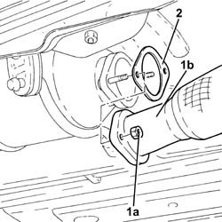
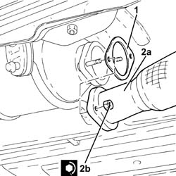

1076B34 FRONT CATALYTIC CONVERTER ATTACHMENT SEAL - REPLACE
- Path
- Procedures > 10 ENGINE UNIT > 1076 EXHAUST PIPES AND SILENCERS > 1076B EXHAUST PIPES AND SILENCERS > 1076B34 FRONT CATALYTIC CONVERTER ATTACHMENT SEAL - REPLACE
- Kind
- repair procedure (removal / refitting; the operation number is the code)
- Applies to
- all engines; all production periods
- Interactive page
- https://sloeber94.github.io/elrnDB-aGt/en/#/125001106
Applies to: engines: 2.0 JTS; all production periods
 Removing
Removing
 Refitting
RefittingPosition the vehicle on the ramp
Ensure that the ignition key is in the OFF position, then disconnect the negative battery terminal (-).
Name | Connector | |
|---|---|---|
- | Battery | See A1B BATTERY ( BATTERY NEGATIVE ) |
Drain the air conditioner coolant circuit
Op. 0010T84 COOLANT FOR AIR CONDITIONING SYSTEM DEHYDRATE AND RECHARGE.
Proceed with removal
Op. 4450B04 RIGHT FRONT WHEEL R R
Proceed with removal
Proceed with removal
Op. 7055B54 UNDER-ENGINE GUARD - R R
Proceed with removal
Proceed with removal
Op. 5040A20 AIR CONDITIONER COMPRESSOR - R+R - INCLUDES FLUID LEVEL CHECK AND TOP UP IF NECESSARY
Proceed with removal
Proceed with removal
Op. 5040A26 COMPRESSOR MOUNT - R R
Op. 1016A40 IGNITION COIL COVER ON CYLINDER HEAD- R+R
Applies to: engines: 2.0 JTS; all production periods
Refitting
RemovingProceed with refitting
Op. 1080B62 CATALYTIC CONVERTER - R + R.
Proceed with refitting
Op. 1076A48 CATALYTIC CONVERTER HEAT SHIELD - R R.
Proceed with refitting
Op. 1016A40 IGNITION COIL COVER ON CYLINDER HEAD- R+R.
Proceed with refitting
Op. 5040A26 COMPRESSOR MOUNT - R R.
Proceed with refitting
Op. 5040A20 AIR CONDITIONER COMPRESSOR - R+R - INCLUDES FLUID LEVEL CHECK AND TOP UP IF NECESSARY.
Proceed with refitting
Op. 7055B54 UNDER-ENGINE GUARD - R R.
Proceed with refitting
Op. 4450B04 RIGHT FRONT WHEEL R R.
Fill the air conditioner coolant circuit
Op. 0010T84 COOLANT FOR AIR CONDITIONING SYSTEM DEHYDRATE AND RECHARGE.
Connect the negative (-) battery terminal
Remove the car from the ramps.
Applies to: engines: 3.2 V6; all production periods
Removing
RefittingProceed with removal
Op. 7055B54 UNDER-ENGINE GUARD - R R
Proceed with removal
Applies to: engines: 3.2 V6; all production periods
Refitting
RemovingProceed with refitting
Op. 1080B65 CATALYTIC CONVERTER ASSEMBLY R R.
Proceed with refitting
Applies to: engines: 1.9 JTD 16V; all production periods
Removing
RefittingPosition the vehicle on the ramp
1. Undo the nuts (1a) and disconnect the front section of the exhaust pipe (1b) from the catalytic converter.
2. Remove the front attachment gasket for the catalytic converter.

Applies to: engines: 1.9 JTD 16V; all production periods
Refitting
Removing1. Place the front catalytic converter attachment gasket in the housing.
2. Place the front section of the exhaust pipe (2a) back in its housing and secure by tightening the nuts (2b) to the recommended torque.
 | Fastening | Component | Ø | Value (daNm) |
|---|---|---|---|---|
2b | Nut | PRE-CAT CONVERTOR/CAT CONVERTOR PIPE | M8 | (Catalytic converter side) 2.3 ÷ 2.8 |

Applies to: engines: 1.9 JTD 16V; all production periods
Remove the car from the ramps.
Applies to: engines: 1.8 T.SPARK; all production periods
Removing
RefittingProceed with the removal
Op. 1080B62 CATALYTIC CONVERTER - R + R
.
Applies to: engines: 1.8 T.SPARK; all production periods
Refitting
RemovingProceed with the refitting
Op. 1080B62 CATALYTIC CONVERTER - R + R
.
Topics linked from this page (9)
- 0010T84 COOLANT FOR AIR CONDITIONING SYSTEM DEHYDRATE AND RECHARGE
- 1016A40 IGNITION COIL COVER ON CYLINDER HEAD- R+R
- 1076A48 CATALYTIC CONVERTER HEAT SHIELD - R R
- 1080B62 CATALYTIC CONVERTER - R + R
- 1080B65 CATALYTIC CONVERTER ASSEMBLY R R
- 4450B04 RIGHT FRONT WHEEL R R
- 5040A20 AIR CONDITIONER COMPRESSOR - R+R - INCLUDES FLUID LEVEL CHECK AND TOP UP IF NECESSARY
- 5040A26 COMPRESSOR MOUNT - R R
- 7055B54 UNDER-ENGINE GUARD - R R